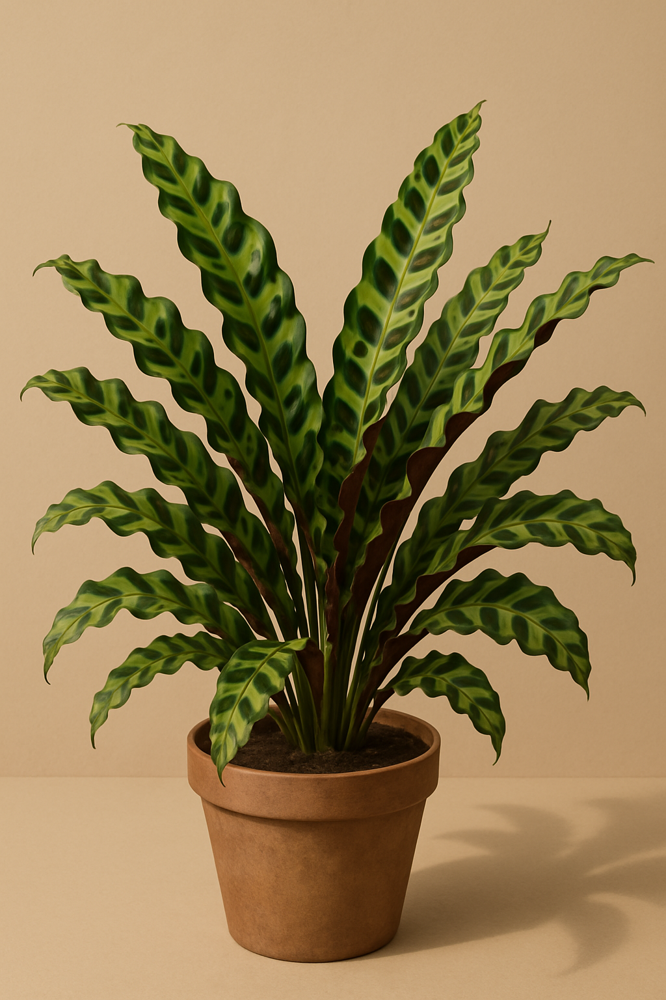

Calatéia-lancifólia
Nome científico: Calathea lancifolia
✅ Tóxica para gatos: Não
☀️ Luz ideal: Luz difusa
💧 Rega: Moderada
Folhas onduladas e estampadas, muito usadas em ambientes internos.
💡 Curiosidade
Também chamada de ‘rattlesnake plant’ pelo formato das folhas.
← Voltar para Plantas